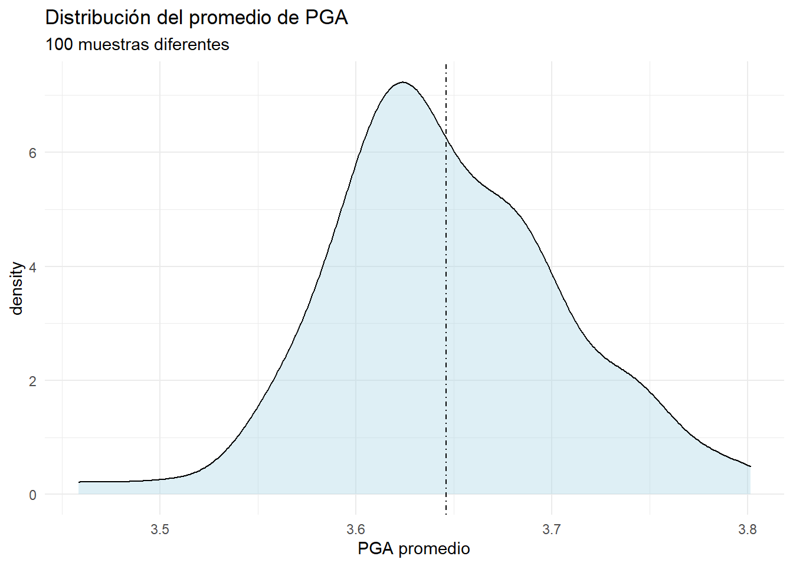

Capítulo1 El modelo de regresión lineal y el estimador MCO
La tabla muestra los resultados para la estimación del siguiente modelo
\[\begin{equation} sales=\beta_0+\beta_1price+\beta_2advert+e \end{equation}\]
Donde sales son los ingresos mensuales de una compañía, en miles de dólares, price es un índice de precios de todos los productos vendidos, y advert es el gasto mensual en publicidad, también en miles de dólares.
| Coefficient | Std. Error | t-value | p-value | |
|---|---|---|---|---|
| (Intercept) | 118.914 | 6.352 | 18.722 | 0.000 |
| price | -7.908 | 1.096 | -7.215 | 0.000 |
| advert | 1.863 | 0.683 | 2.726 | 0.008 |
Interprete los resultados
Explique la magnitud del coeficiente estimado
Explique cada una de las columnas
¿Son las variables significativas? Si la respuesta es afirmativa, ¿esto que quiere decir?
Desde el punto de vista práctico, los números que mas nos interesan en la tabla son la estimación puntual del coeficiente y el error estándar. Con el primero examinamos la dirección y magnitud del efecto de \(x\) sobre \(y\), con el segundo tenemos una idea de la precisión de la estimación y nos permite indagar si el valor estimado del parámetro es diferente de cero, en términos estadísticos. Veamos esto en detalle
1.1 La mecánica del estimador MCO
Suponga que usted tiene los siguientes datos

La regresión lineal no es más que buscar la línea que mejor se ajuste a estos datos. La forma más simple de estimar los parámetros es usando el estimador de Mínimos Cuadrados Ordinarios, MCO. La idea es la siguiente.
Planteamos una relación lineal entre \(y\) y \(x\)
\[\begin{equation} y=\alpha+\beta x+e \end{equation}\]
En esta ecuación \(\alpha\) es el intercepto y \(\beta\) la pendiente. El término \(e\) lo llamamos el error. Note que el error recoge la diferencia entre lo que observamos de \(y\) y lo que \(x\) predice que será \(y\). Si \(\alpha=100\) y \(\beta=10\) entonces podemos decir que si \(x=10\) entonces \(y=200\). Sin embargo, al observar la gráfica se dará cuenta que hay muchas puntos donde \(x=10\) pero \(y\neq200\). Esa diferencia es \(e\) ¿Por qué podría darse esa diferencia entre lo predicho y lo observado? Varias razones
Hay otras variables, ej. \(z\), que pueden afectar el comportamiento de \(y\), y que no hemos incluido
Variabilidad aleatoria.
Digamos que \(\hat{y}\) es la línea de regresión, y esta es igual a
\[\begin{equation} \hat{y}=\hat{\alpha}+\hat{\beta}x \end{equation}\]
La distancia entre cada punto y la línea de regresión es
\[\begin{equation} \hat{e}_i=y_i-\hat{y}_i=y_i-\hat{\alpha}-\hat{\beta}x_i \end{equation}\]
Los parámetros que producen la mejor línea son aquellos que minimizan la suma de los residuales al cuadrado
\[\begin{equation} SSE=\sum_i\hat{e}_i^2 \end{equation}\]
Lo anterior quiere decir, que aún cuando hay muchas líneas que recogen la relación positiva entre nuestras variables, hay una que es la mejor de todas

El estimador MCO, puede entenderse como un algoritmo para encontrar la mejor línea entre todas las posibles. Donde mejor significa la que minimiza la suma de residuales al cuadrado. En términos más simples, la línea que se equivoca menos.
1.2 Estimador
Decimos que estimamos los parámetros \(\boldsymbol{\beta}\) porque partimos de la idea de que nuestras variables \(y\) y \(x\) son variables que representan a alguna población. Sin embargo, nosotros tenemos una muestra particular. Es decir, nuestros datos son una única muestra de muchas muestras posibles que pudimos haber obtenido de la misma población.
Por ejemplo, supongamos que nuestra población de interés son los estudiantes de economía de la Universidad del Norte, \(N=180\). Sea \(PGA\) el promedio académico de cada estudiante. Queremos calcular el promedio de \(PGA\) para la población de estudiantes del programa de economía. El parámetro poblacional es el PGA promedio para todos los estudiantes, \(\mu=E(PGA)\).
Por alguna razón, no es posible obtener ese dato para todos los estudiantes, sino que tenemos a nuestra disposición una muestra aleatoria de 50 estudiantes, \(n_1=50\). Con esta muestra calculamos (estimamos) un PGA promedio de 3.6. Llamemos a esta estimación \(\hat{\mu}_1=\bar{PGA}_1=\dfrac{1}{n_1}\sum_{i=1}^{n_1}PGA_i\)
Imagine que hubiésemos obtenido una muestra diferente, \(n_2=50\), y con esta muestra calculamos un \(\hat{\mu}_2=3.5\). Debe ser claro que siempre que estimamos, el número que obtenemos va a depender de la muestra que tengamos. La variabilidad muestral es inevitable, así que lo importante es tenerla en cuenta para poder evaluar que tan bueno es nuestro proceso de estimación.
Así, mientras \(\mu\) es un parámetro poblacional \(\hat{\mu}\) es un estimador de dicho parámetro poblacional. El parámetro poblacional es una característica no aleatoria de la población, mientras que el estimador si es aleatorio. \(\mu\) está fijo y \(\hat{\mu}\) varía entre muestras. Veamos
Supongamos que podemos tomar 100 muestras diferentes de tamaño 50. Para cada muestra calculamos el PGA promedio, \(\mu_i\) donde \(i=1,...100\). Veamos como se distribuye el PGA promedio estimado en cada muestra.
library(msm)
set.seed(12345) #para iniciar la obtención de números aleatorios
pga<-rtnorm(180,mean=3.6,sd=0.4,lower=1,upper=5)
nrsim<-100
vpga<-numeric(nrsim)
for (i in 1:nrsim){
pgasi<-sample(pga,50,replace=TRUE,prob=NULL)
vpga[i]<-mean(pgasi)
}library(ggplot2)
vpgadf<-data.frame(vpga)
ggplot(vpgadf,aes(x=vpga))+geom_density(fill="lightblue",alpha=0.4)+geom_vline(xintercept=mean(vpga),linetype=4)+theme_minimal()+labs(title="Distribución del promedio de PGA",subtitle="100 muestras diferentes",x="PGA promedio") 
El promedio de las estimaciones en las 100 muestras, \(\dfrac{1}{100}\sum_{i=1}^{100}\hat{\mu}_i\), es
round(mean(vpga),digits=2)## [1] 3.65Este valor lo comparamos con el valor del parámetro poblacional, que en este caso es
round(mean(pga),digits=2)## [1] 3.65Así, podemos decir que nuestro procedimiento para estimar el promedio de PGA a partir de una muestra es bueno, pues en promedio nos permitirá obtener el valor verdadero. En otras palabras
\[\begin{equation} \dfrac{1}{100}\sum_{i=1}^{100}\hat{\mu}_i=\mu \end{equation}\]
1.3 Estimador MCO
Ya sabemos que el estimador MCO consiste en obtener los parámetros que minimizan la suma de los errores al cuadrado. El método de mínimos cuadrados consiste en obtener los valores de los parámetros \(\boldsymbol{\beta}\) que minimizan
\[SSE(\beta)=\sum_{i=1}^{n}(y_i-\beta_0-\beta_1x_{i1}-\beta_2x_{i2}-...-\beta_kx_{ik})^2\] Si llamamos \(\boldsymbol{\hat{\beta}}\) a los parámetros estimados con los datos que tenemos, entonces sabemos que la formula para computarlos es, en términos matriciales1
\[\begin{equation} \hat{\boldsymbol{\beta}}=\mathbf{(X'X)^{-1}X'Y} \end{equation}\]
Donde \(\mathbf{X}\) y \(\mathbf{Y}\) son las matrices de datos, de dimensiones \(nxk\) y \(nx1\), respectivamente.
Para poner las cosas simples, supongamos que tenemos el siguiente modelo
\[\begin{equation} y=\beta_0+\beta_1x_1+\beta_2x_2+e \end{equation}\]
De la sección anterior sabemos que los estimadores (\(\hat{\beta_0},\hat{\beta_1},\hat{\beta_2}\)) son variables aleatorias. Toman diferentes valores en diferentes muestras, y sus valores son desconocidos hasta que la muestra es obtenida y sus valores computados. La distribución muestral del estimador MCO describe como varían estos estimadores sobre todas las muestras posibles. Las propiedades muestrales del estimador hacen referencia a la media y la varianza de de dicha distribución.
Si la media de la distribución es igual al valor del parámetro poblacional, entonces decimos que el estimador es insesgado. En nuestro ejemplo de PGA esto es lo mismo que decir \(E(\hat{\mu})=\mu\). La varianza de la distribución nos dice que tanto cambia el estimador entre muestras. Entre más cambie entre muestras, menos confiable es el estimador, menos preciso.
1.3.1 Simulación
Simulemos un proceso y veamos estas ideas de forma precisa. Digamos que la ecuación poblacional es
\[\begin{equation} Y=5+2.5X_1+3X_2+e \end{equation}\]
y que nuestra población es \(N=10,000\). Como antes, supongamos que no conocemos el valor de los parámetros y los estimamos a partir de alguna muestra. Obtenemos muestras de tamaño \(n=100\), aproximadamente. Lo que queremos ver es si nuestro procedimiento nos permite obtener los parámetros verdaderos. Simularemos \(1000\) muestras
library(mvtnorm)
N<-10000
coefs<-cbind("hat_beta_1" = numeric(1000), "hat_beta_2" = numeric(1000)) #Vector que guardará los coeficientes
set.seed(1) # permite reproducir los resultados
X <- rmvnorm(N, c(50, 100), sigma = cbind(c(10, 2.5), c(2.5, 10))) # generamos X1 y X2
e <- rnorm(N, sd = 5)
Y <- 5 + 2.5 * X[, 1] + 3 * X[, 2] + e
xdf<-data.frame(X,Y)
nrsim<-1000 #obtenemos 1000 muestras de nuestra población
for (i in 1:nrsim){
dfs<-sample(c(TRUE,FALSE),nrow(xdf),replace=TRUE,prob=c(0.01,0.99)) #muestra aleatoria, n aprox 100
dfs<-xdf[dfs,]
ols<-lm(Y~X1+X2,data=dfs) #estimamos para cada muestra generada
coefs[i,]<-coef(ols)[-1] # el valor estimado de b1 y b2 en cada muestra se lleva al vector coefs
}
coefs.df<-data.frame(coefs)Calculemos ahora el promedio de los valores estimados \(\hat{\beta_1}\) y \(\hat{\beta_2}\)
library(dplyr)
msd<-coefs.df%>%summarise(b1m=mean(coefs.df$hat_beta_1),
b2m=mean(coefs.df$hat_beta_2),
b1sd=sd(coefs.df$hat_beta_1),
b2sd=sd(coefs.df$hat_beta_1)
)
kable(msd,
caption="Promedio y desviación estándar de los estimadores",
col.names=c("Media b1", "Media b2", "SD b1", "SD b2"),
align="c", digits=2)| Media b1 | Media b2 | SD b1 | SD b2 |
|---|---|---|---|
| 2.5 | 2.99 | 0.17 | 0.17 |
Veamos la distribución del estimador \(\hat{\beta}_1\)
ggplot(coefs.df,aes(x=hat_beta_1))+geom_density(fill="lightblue",alpha=0.4)+
geom_vline(xintercept=mean(coefs.df$hat_beta_1),linetype=4)+theme_minimal()+
labs(title="Distribución del promedio del estimador",subtitle="1000 muestras diferentes",x=expression(beta[1]*estimado)) 
Con cada muestra se estima un valor diferente del parámetro de interés, pero si promediamos todas las estimaciones encontramos que \(\dfrac{1}{1000}\sum_{i=1}^{1000}\hat{\beta}_{1i}=2.5\). Este es exactamente el valor del parámetro poblacional. Podemos decir entonces que nuestro estimador es insesgado.
Ejercicio
Replique la actividad anterior, pero ahora varíe el tamaño de muestra: i) \(n\approx50\); ii) \(n\approx1000\). Compare la media y la desviación estándar del estimador ¿Qué puede concluir?
En el siguiente capítulo lo elaboramos en detalle↩︎